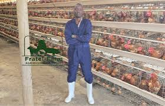
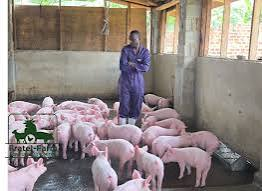
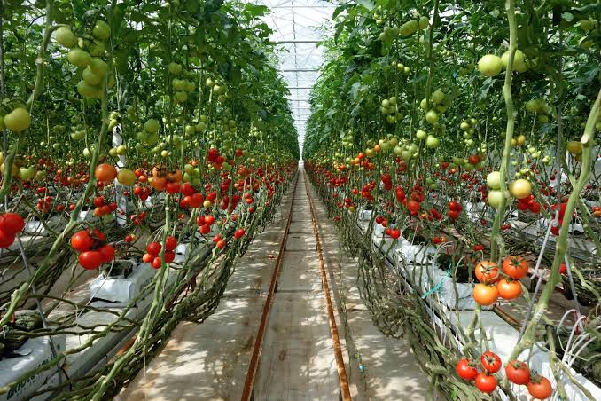

Broiler Farming
Manage meat production, flock growth, feed consumption, mortality, sales and profitability.
Explore Broiler Farming →
AgriPredict empowers farmers and agricultural businesses with data-driven insights to estimate production costs, monitor growth, forecast revenue and make better investment decisions.
Explore the activity and reach of the AgriPredict platform.
Registered Farmers
Active Projects
Farms Monitored
Forecasts Generated
Platform statistics will update using verified AgriPredict system records.
Choose an agricultural enterprise to manage production, monitor expenses and generate forecasts.

Manage meat production, flock growth, feed consumption, mortality, sales and profitability.
Explore Broiler Farming →
Monitor dual-purpose chicken production, growth, feed requirements, egg production and expected returns.
Explore Croiler Farming →
Track egg production, flock performance, feed expenses, egg sales and long-term profitability.
Explore Layer Farming →
Monitor feed consumption, animal growth, production costs, market prices and expected profitability.
Explore Piggery →
Track stocking levels, feed requirements, fish growth, operational expenses and expected returns.
Explore Fish Farming →
Estimate planting costs, input requirements, crop production, expected yields and potential profits.
Explore Crop Farming →Monitor milk production, animal health, feeding expenses, milk sales and dairy enterprise profitability.
Explore Dairy Farming →AgriPredict is an agricultural intelligence platform designed to help farmers understand the financial and production implications of their farming decisions.
By entering actual farm information, users can calculate costs, estimate feed requirements, monitor growth, forecast revenue and explore different farming scenarios.
Our goal is to make agricultural planning more informed, measurable and accessible.